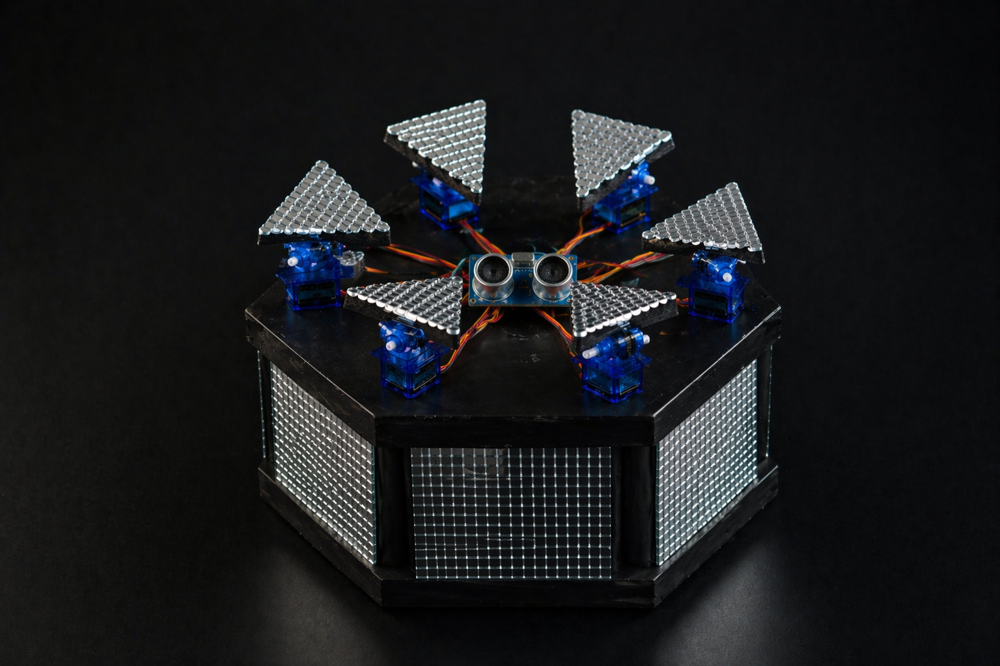
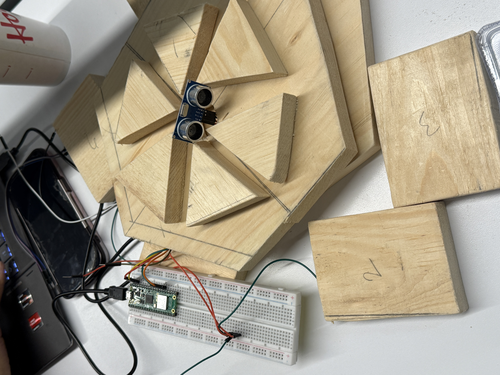
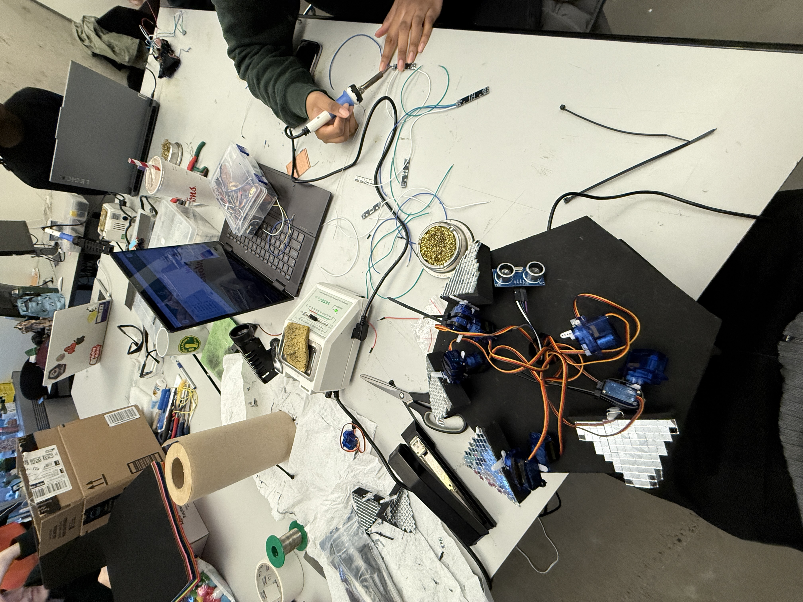
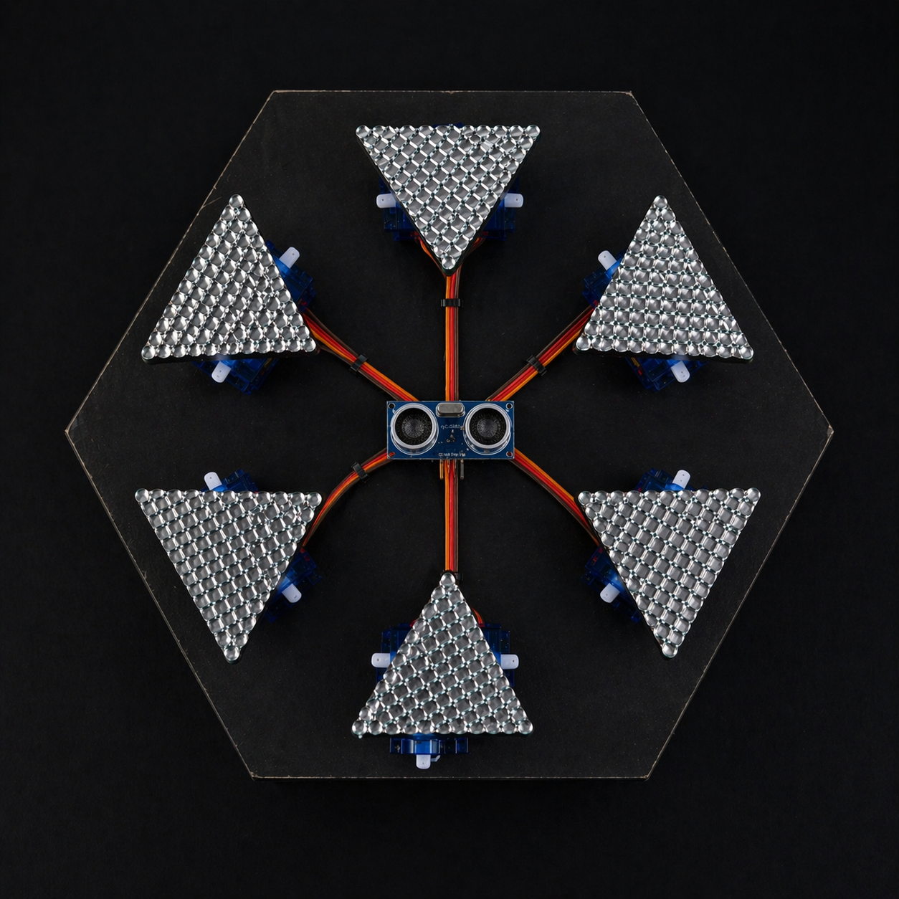
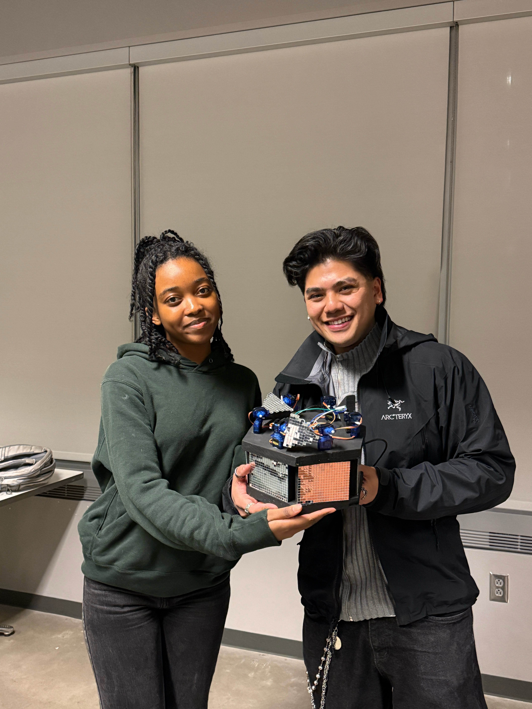

Ndako Bukas
Tomorrow House
A proximity-reactive interactive installation that translates human presence into mechanical motion and light, where house music meets architecture. Built with a Raspberry Pi Pico, 12 servo motors, and NeoPixel LEDs.

Built for the festival stage.
We did not set out to make a school project. We set out to make a pitch. Growing up watching Coachella, we knew that the world's best music festivals are never just about the music. They are about walking into something you have never seen before.
Montreal has that same energy
Osheaga, Piknic Electronik and the festivals produced by Evenko and Multicolore are known for commissioning large-scale installation art. As music lovers who grew up going to these events, we wanted to create something that could genuinely live on one of those grounds.
"Ndako Bukas" means Tomorrow House
"Ndako" from African linguistic roots means house. "Bukas" from Filipino means tomorrow. The name reflects both our backgrounds and the concept: a future-oriented, cross-cultural space where house music and architecture become one thing.
The installation reacts to you
Step toward it and the roof panels fold in, the lights shift red, the energy intensifies. Step back and it opens up into an ambient green glow. Your body becomes the controller. The closer you get, the more alive it becomes.
This miniature is the proof of concept
The goal is to scale Ndako Bukas into a full-size walk-in installation that festival goers can physically enter and explore, where the panels above react to how many people are inside and where sound drives every movement.
Coachella Valley Music and Arts Festival, where large-scale interactive installations are as central as the music lineup.
You move. It moves.
The interaction is built on proximity detection. An ultrasonic sensor continuously measures the distance between the user and the artifact, translating movement into mechanical and visual responses. Threshold: 20 cm.
🔴 Object Close (< 20 cm)
- Servos rotate to 45° , panels fold inward
- LED strips pulse red
- High energy, intense state
🟢 Clear (> 20 cm)
- Servos rotate to 135° , panels open wide
- LED strips glow green
- Calm, ambient state
Hardware + software, working as one.
A Raspberry Pi Pico serves as the central controller, coordinating inputs from the ultrasonic sensor and driving 12 servo motors and 5 LED strips via a PCA9685 PWM driver over I2C.
The PCA9685 manages all 12 servo channels simultaneously via I2C, expanding beyond the Pico's native GPIO limit. Servo positions are mapped from angle (0–180°) to pulse width (500µs–2500µs) via linear interpolation.
MicroPython Source
# main.py: Core interaction loop from machine import I2C, Pin import utime from pca9685 import PCA9685, Servo from ultrasonic import ultra import neopixel THRESHOLD = 20 # cm, proximity trigger LEFT_ANGLE = 45 # close: panels fold in RIGHT_ANGLE = 135 # clear: panels open out # 5 strips × 8 LEDs each strips = [neopixel.NeoPixel(Pin(p), 8) for p in [6, 7, 8, 9, 10]] def set_all_strips(r, g, b): for strip in strips: for i in range(8): strip[i] = (r, g, b) strip.write() while True: distance = ultra() if distance < THRESHOLD: servo_Angle(LEFT_ANGLE) set_all_strips(255, 0, 0) # red else: servo_Angle(RIGHT_ANGLE) set_all_strips(0, 255, 0) # green utime.sleep(0.1)
# pca9685.py: PWM driver over I2C from machine import I2C, Pin import ustruct, utime class PCA9685: def __init__(self, i2c, address=0x40): self.i2c = i2c self.address = address self._write(0x00, 0x00) self.freq(50) def freq(self, freq): prescale = int(25_000_000 / (4096 * freq) - 1) old = self._read(0x00) self._write(0x00, (old & 0x7F) | 0x10) self._write(0xFE, prescale) self._write(0x00, old) self._write(0x00, old | 0xa1) def duty(self, channel, on=0, off=0): reg = 0x06 + 4 * channel self.i2c.writeto_mem( self.address, reg, ustruct.pack( '<HH', on, off)) class Servo: def goto(self, value): value = max(0, min(1024, value)) us = self.min_us + \ (value / 1024) * \ (self.max_us - self.min_us) off = int(us * 4096 / 20000) self.pca.duty( self.channel, 0, off)
# ultrasonic.py: HC-SR04 from machine import Pin import utime trigger = Pin(20, Pin.OUT) echo = Pin(21, Pin.IN) def ultra(): trigger.low() utime.sleep_us(2) trigger.high() utime.sleep_us(5) trigger.low() while echo.value() == 0: signaloff = utime.ticks_us() while echo.value() == 1: signalon = utime.ticks_us() timepassed = signalon - signaloff distance = (timepassed * 0.0343) \ / 2 return distance # returns cm
# servo.py: Direct PWM servo (single pin) from machine import Pin, PWM class Servo: """Single-pin 9g servo via PWM. Use pca9685.py for multi-motor setups via the PCA9685 driver.""" def __init__(self, pin, minVal=2500, maxVal=7500): if isinstance(pin, int): pin = Pin(pin, Pin.OUT) if isinstance(pin, Pin): self.__pwm = PWM(pin) if isinstance(pin, PWM): self.__pwm = pin self.__pwm.freq(50) self.minVal = minVal self.maxVal = maxVal def goto(self, value: int): # value: 0 to 1024 value = max(0, min(1024, value)) delta = self.maxVal - self.minVal target = int(self.minVal + (value / 1024) * delta) self.__pwm.duty_u16(target) def middle(self): self.goto(512) def free(self): self.__pwm.duty_u16(0) def deinit(self): self.__pwm.deinit()
Built by hand.
Hexagonal plywood base
Precisely measured and hand-cut plywood panels form a stable hexagonal enclosure. Painted black and finished with mirrored tiles on the exterior walls to reflect LED light outward.
Mirrored triangular roof panels
12 triangular panels, each covered in mirrored tile, are mounted directly onto individual servo horns. When all servos actuate simultaneously the roof transforms from open flower to closed disc.
Electronics integration
All motors, sensors, and wiring are embedded within the structure. Exposed wiring on the roof surface is intentionally left visible as part of the aesthetic, referencing the layered complexity of electronic music.
LED strip layout
Five NeoPixel strips run along the interior walls, diffusing coloured light through the mirrored panels.
What we had to solve.
12 servos, 1 controller
Coordinating all motors simultaneously without lag required careful calibration and the PCA9685 PWM driver over I2C to expand beyond the Pico's native GPIO limit.
Sensor reliability
Fine-tuning the HC-SR04 for consistent readings was critical, small inconsistencies directly cascaded into both servo behaviour and LED response timing.
Wiring in a compact space
Routing cables for 12 motors, 5 LED strips, sensor wires, and power inside the hexagonal enclosure required multiple layout rebuilds.
Aesthetic vs. functional balance
Panel weight affected servo torque; mirror tile adhesion affected panel balance. Every fabrication decision passed both a visual and a mechanical test.


Top: raw plywood prototype with breadboard Pico wiring.
Bottom: soldering LED strips and routing cables mid-build.
It works. Here is the proof.
Two playtests were conducted during CART 360 class presentations. Some components were still being refined at the time of recording, but the core interaction, proximity detection driving servo movement and LED response, was fully functional.
Playtest 1 — first in-class demo, early build stage
Playtest 2 — refined build, final showcase
What this project taught us.
Embedded systems can be expressive
Working with sensors and actuators beyond the screen showed how responsive environments communicate emotion, not just information. Servo angle became a design variable, not just a technical output.
Iteration is everything physical
Small adjustments in calibration, structure, or code had significant impact on overall behaviour. We rebuilt the sensor loop three times and re-calibrated servo angles twice before the response felt natural.
UX lives in physical space too
Interaction design isn't confined to screens. It's shaped by human movement, presence, and the space between bodies and objects. This project reinforced that instinct as a practitioner.
From miniature to festival stage.
The end goal is to pitch Ndako Bukas as a full-scale interactive installation to Montreal's major festivals. Osheaga, Piknic Electronik, Palomino and the events produced by Evenko and Multicolore already commission large-scale art experiences. We want Ndako Bukas to be part of that conversation.
The biggest evolution for the next version is sound. Because the project is so rooted in music, we want each panel to react to a specific frequency band rather than just proximity. The roof becomes a physical equalizer: bass moves one set of panels, vocals lift another, high-frequency transients flicker a third. Every triangle in the installation becomes a dedicated listener for a different part of the mix.
Imagine walking into the full-scale version at Osheaga. The drop hits, the bass panels slam open, the high-hat panels flutter, the vocal panels sweep slowly in an arc above the crowd. The architecture becomes a physical representation of the music playing around it. Ndako Bukas at scale is not just an art piece. It is a venue that listens.

Top-down view showing 6 mirrored panels radiating from the ultrasonic sensor.

Jeboy Compuesto & Jolene Bodika, CART 360 final showcase.

Osheaga at Parc Jean-Drapeau, one of the festivals we want to pitch.